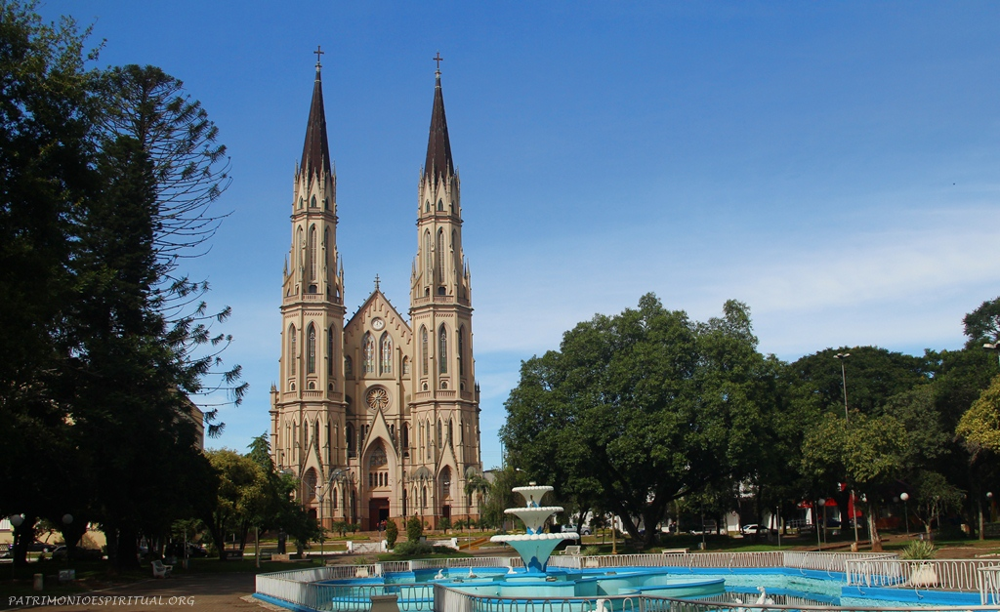

A Catedral São João Batista é uma igreja católica localizada na zona central do município de Santa Cruz do Sul, no estado brasileiro do Rio Grande do Sul. É o maior templo católico em estilo gótico da América do Sul.
Desde 1959 com a criação da diocese de Santa Cruz do Sul com jurisdição sobre diversos municípios, a igreja passou a chamar-se Catedral São João Batista. A primeira Igreja Católica foi construída em 1863, e o primeiro padre foi Manoel José da Conceição Braga em 1860.

Volte ao início